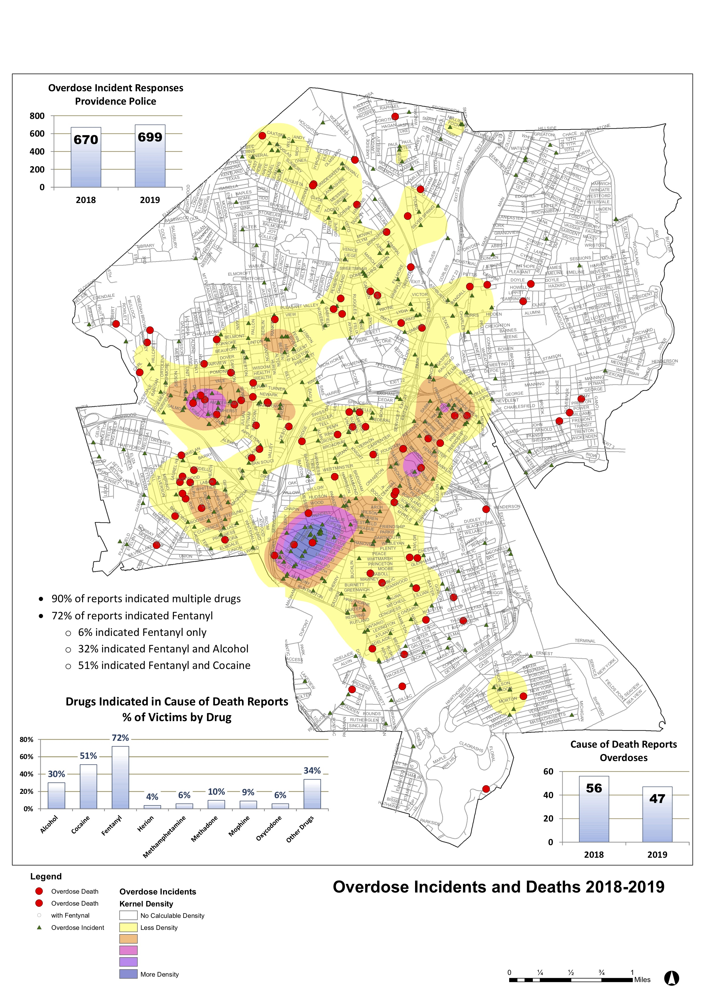

Fentanyl is the leading drug causing fatalities. 72/101 overdoses involved fentanyl, 51/101 involved cocaine, and 29/101 involved alcohol.
They occur in zip code 02909.
They occur in zip code 02909.
An interactive map of the opioid overdoses in Providence can be seen using Tableau. A general overview can be seen here:
The average household size is 2.46 (vs 2.33 average in Providence).Per neighborhood: 16,285 average number of Caucasians (51% vs 54% average in Providence), 4,595 average number Black/African Americans (14% vs 16.03%), 450 average number American Indians (1.4% vs 1.16%), 1,869 average number Asians (6% vs 6.10%), 13,019 average number Hispanic/Latinx (41% vs 43%). Percent of the population institutionalized: .86% (vs .84% in Providence).
Judging based on the census data alone, this crisis impacts everyone pretty equitably.